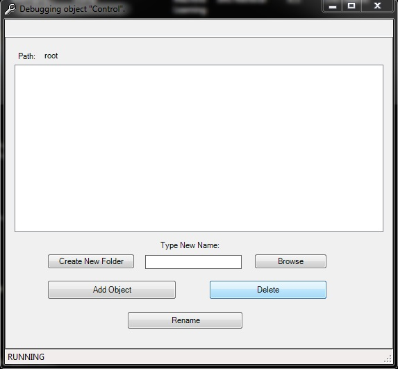
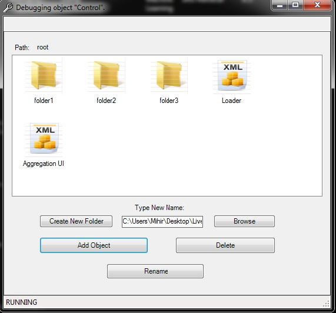
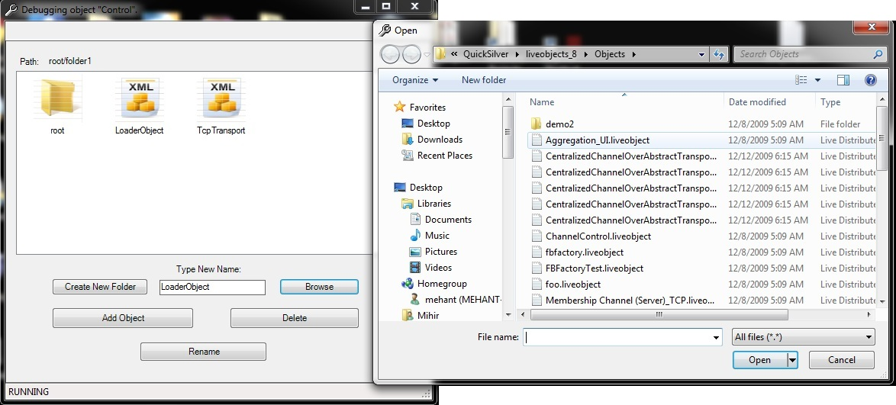
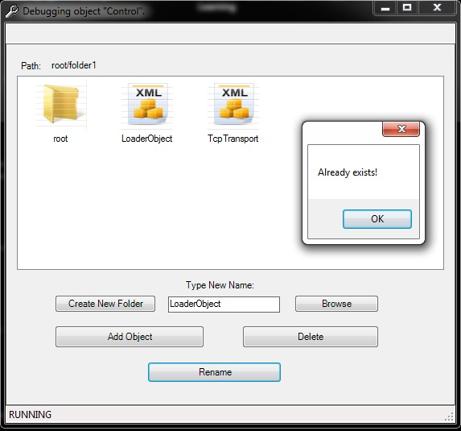
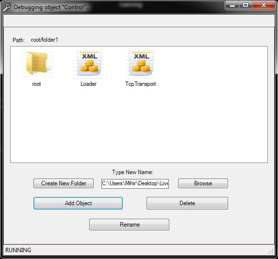
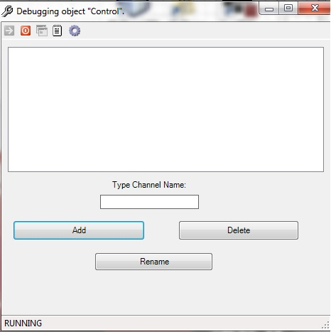
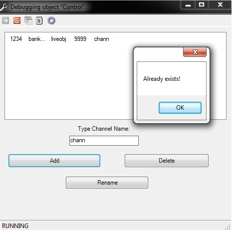

Functionality
The final goal of this project is to build a more functional version of the shared folder for channels. All available channels will be displayed as folders/files and operations like addition of channels (by drag-and-drop or by browsing through the filesystem), rename and deletion will be provided.
Current Version
As of now (December 14th, 2009) the following functionalities have been implemented:
Basic setup instructions
Start the Live Distributed Objects service from Control Panel -> Administrative Tools -> Services.
Double-click the ChannelDouble-click the ChannelControl.liveobject file from the Examples folder of the distribution.
Create as many instances as you wish by repeating step 2.
How to Use
1. This is what you will see on executing
ChannelControl.liveobject :

2. To add a folder , type in the folder name and click on Create New
Folder button as shown below:

3. To add a liveobject reference ,
either use the Browse button present or drag and drop the liveobject into the
application window:

4. To delete a folder , select the specific folder in the window and click on Delete button
5 . To rename a folder : Select
the specific folder in the window,then type in a new name in the text box
provided and click the Rename button:

6. Browse through the "file system" by double clicking on any folder. The path
above the window displays your current folder's path.

Future Work
Command line interface : making all the GUI functionality available through a Windows-DOS like console
Sharpening up the current GUI and adding more functionality to it( eg Back button, making the UI as similar to Windows as possible)
Problems Encountered
to be added...
Functionality
The final goal of this project is to build a more functional version of the shared folder for channels. All available channels will be displayed as folders/files and operations like addition of channels (by drag-and-drop or by browsing through the filesystem), rename and deletion will be provided.
Current Version
As of now (November 2, 2009) we are representing files simply as strings in a list view. A textbox is provided to input the string name (analogous to the channel name). This textbox will later be replaced by a browse button. Adding, renaming and deletion of strings replicated across all instances is possible in this version.
Basic setup instructions
Start the Live Distributed Objects service from Control Panel -> Administrative Tools -> Services.
Double-click the ChannelDouble-click the ChannelControl.liveobject file from the Examples folder of the distribution.
Create as many instances as you wish by repeating step 2.
How to Use
This is what you will see on executing
ChannelControl.liveobject :

To Add: Enter some text in the textbox and click on
Add button. If that string already exists, an alert box will pop up.

To Delete: Select the icon from the list, and click on Delete button.
To Rename: Select the icon from the list, type the new name in the textbox (don't worry if the focus on the selected icon disappears when you start typing in the textbox) and then click on Rename. If the new name already exists, an alert box will pop up. and the rename operation will be disallowed.
Future Work
Allow drag and drop into and out of the shared folder for channels
Allow folders to be created, and each file will be an XML file for the specific channel. (files are represented by strings in the current version)